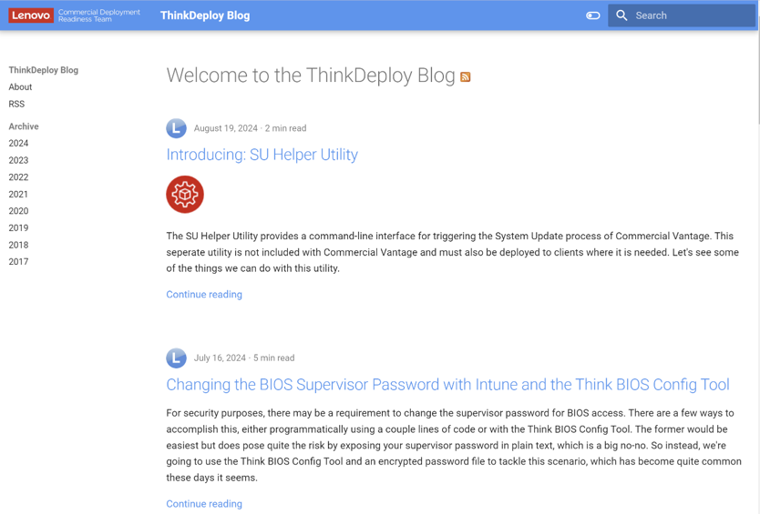

Think Deploy Blog
How-tos and deep dives from the deployment engineers.
Inventory
- What it is
- Articles on new ways to use Lenovo's client management solutions, written by the deployment engineers on the CDRT team.
- Address
- blog.lenovocdrt.com
- RSS
- blog.lenovocdrt.com/feed.xml
What you will find
- Deep dives into new features as they launch.
- Practical how-to guides and automation recipes.
- An RSS feed, so you can stay current with new articles.
- Answers from the same authors in the ECM Forum, where you can follow up on any article.

Articles that go with this guide
- HSA Best Practices Guide
- Deploying Commercial Vantage with Intune
- Introducing Commercial Vantage Policy Manager for Intune
- Lenovo Updates Catalog v3 for SCCM
- Introducing Think BIOS Config Tool V2 and Lenovo BIOS Certificate Tool V2
- Updating Lenovo BIOS, drivers and firmware in a Configuration Manager task sequence using the Lenovo.Client.Update module
- Introducing ThinkVantage Repository Manager